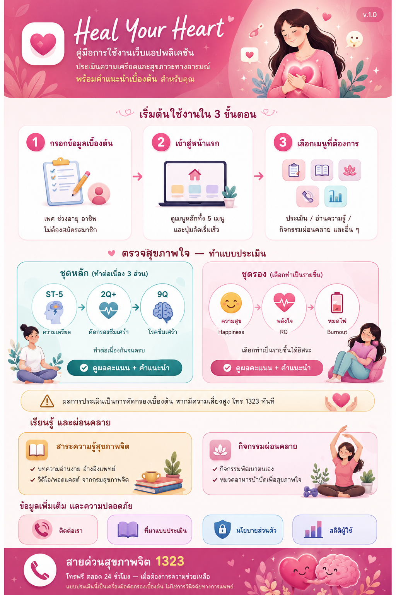

วิธีการใช้งานเว็บแอปพลิเคชัน
Heal Your Heart

🚨 คำเตือนสำคัญ: แบบประเมินในเว็บไซต์นี้เป็นเพียงเครื่องมือคัดกรองสภาวะทางอารมณ์เบื้องต้นเท่านั้น ไม่สามารถใช้แทนการวินิจฉัยทางการแพทย์ได้ หากท่านมีความรู้สึกทุกข์ใจอย่างรุนแรง โปรดติดต่อสายด่วน 1323 หรือพบแพทย์ผู้เชี่ยวชาญทันที
📝 ขั้นตอนการทำแบบประเมินสุขภาพใจ
- เข้าสู่ระบบ (Login): กรอกข้อมูลเบื้องต้นของท่าน เช่น เพศ, ช่วงอายุ, และอาชีพ เพื่อให้ระบบนำไปใช้ประกอบการประมวลผลคำแนะนำที่เหมาะสม (ข้อมูลจะถูกเก็บเป็นความลับ)
- เลือกแบบประเมินที่ต้องการ: ท่านสามารถเลือกทำ "แบบประเมินชุดหลัก" (ST-5, 2Q, 9Q) หรือเลือกทำแบบประเมินย่อยเฉพาะด้านที่สนใจ เช่น ความสุข, พลังใจ (RQ), หรือ ภาวะหมดไฟ (Burnout)
- ตอบคำถามตามความรู้สึกจริง: เลือกคำตอบที่ตรงกับความรู้สึกของท่านในช่วง 1 - 2 สัปดาห์ที่ผ่านมามากที่สุด ระบบจะบังคับให้ตอบครบทุกข้อก่อนไปหน้าถัดไป
- รับผลการประเมินและคำแนะนำ: เมื่อทำเสร็จ ระบบจะประมวลผลคะแนนและแสดงสถานะความเสี่ยง (สีเขียว, เหลือง, ส้ม, แดง) พร้อมทั้งให้คำแนะนำเบื้องต้นในการดูแลจิตใจ
📊 รายละเอียดของแบบประเมินต่างๆ
| ชื่อแบบประเมิน | วัตถุประสงค์ของการประเมิน |
|---|---|
| ST-5 (ความเครียด) | ใช้ประเมินระดับความเครียดสะสมในปัจจุบัน เพื่อเช็คว่าจิตใจกำลังแบกรับความหนักหน่วงมากเกินไปหรือไม่ |
| 2Q+ & 9Q (ภาวะซึมเศร้า) | ใช้คัดกรองความเสี่ยงของโรคซึมเศร้า และระดับความรุนแรงของอาการหดหู่ สิ้นหวัง |
| Happiness (ความสุข) | เครื่องมือประเมินระดับความสุขโดยรวมในช่วงเวลาที่ผ่านมาแบบรวดเร็ว |
| RQ (พลังใจ) | ประเมินความยืดหยุ่นทางอารมณ์ ความสามารถในการฟื้นตัวจากปัญหาและความยากลำบาก |
| Burnout (ภาวะหมดไฟ) | ประเมินความเหนื่อยล้าทางอารมณ์และจิตใจที่เกิดจากการทำงานหรือการใช้ชีวิตที่หนักเกินไป |
หากท่านต้องการผ่อนคลายจิตใจหลังทำแบบประเมิน
เว็บไซต์ของเราได้รวบรวม สาระความรู้เกี่ยวกับสุขภาพจิต และ กิจกรรมผ่อนคลาย ทั้งบทความ วิดีโอ และอาหารบำบัดไว้ที่เมนูด้านบน ท่านสามารถเลือกเข้าชมเพื่อฮีลใจตัวเองได้ทุกเวลาครับ